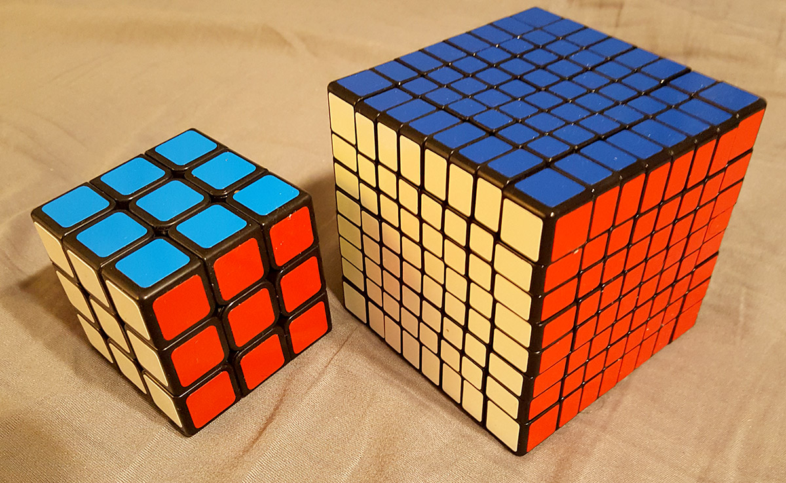
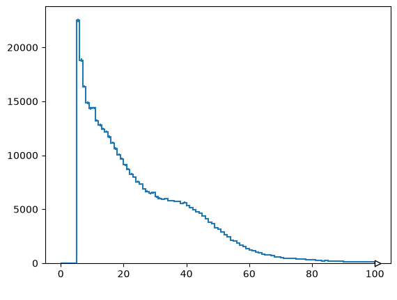
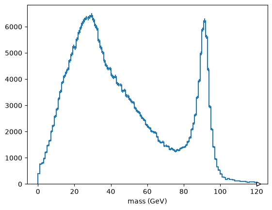

Thinking in arrays#
Originally presented as part of HSF-India training on December 18, 2023.
So far, all the arrays we’ve dealt with have been rectangular (in $n$ dimensions; “rectilinear”).

What if we had data like this?
[
[[1.84, 0.324]],
[[-1.609, -0.713, 0.005], [0.953, -0.993, 0.011, 0.718]],
[[0.459, -1.517, 1.545], [0.33, 0.292]],
[[-0.376, -1.46, -0.206], [0.65, 1.278]],
[[], [], [1.617]],
[]
]
[
[[-0.106, 0.611]],
[[0.118, -1.788, 0.794, 0.658], [-0.105]]
]
[
[[-0.384], [0.697, -0.856]],
[[0.778, 0.023, -1.455, -2.289], [-0.67], [1.153, -1.669, 0.305, 1.517, -0.292]]
]
[
[[0.205, -0.355], [-0.265], [1.042]],
[[-0.004], [-1.167, -0.054, 0.726, 0.213]],
[[1.741, -0.199, 0.827]]
]
What if we had data like this?
[
{"fill": "#b1b1b1", "stroke": "none", "points": [{"x": 5.27453, "y": 1.03276},
{"x": -3.51280, "y": 1.74849}]},
{"fill": "#b1b1b1", "stroke": "none", "points": [{"x": 8.21630, "y": 4.07844},
{"x": -0.79157, "y": 3.49478}, {"x": 16.38932, "y": 5.29399},
{"x": 10.38641, "y": 0.10832}, {"x": -2.07070, "y": 14.07140},
{"x": 9.57021, "y": -0.94823}, {"x": 1.97332, "y": 3.62380},
{"x": 5.66760, "y": 11.38001}, {"x": 0.25497, "y": 3.39276},
{"x": 3.86585, "y": 6.22051}, {"x": -0.67393, "y": 2.20572}]},
{"fill": "#d0d0ff", "stroke": "none", "points": [{"x": 3.59528, "y": 7.37191},
{"x": 0.59192, "y": 2.91503}, {"x": 4.02932, "y": -1.13601},
{"x": -1.01593, "y": 1.95894}, {"x": 1.03666, "y": 0.05251}]},
{"fill": "#d0d0ff", "stroke": "none", "points": [{"x": -8.78510, "y": -0.00497},
{"x": -15.22688, "y": 3.90244}, {"x": 5.74593, "y": 4.12718}]},
{"fill": "none", "stroke": "#000000", "points": [{"x": 4.40625, "y": -6.953125},
{"x": 4.34375, "y": -7.09375}, {"x": 4.3125, "y": -7.140625},
{"x": 4.140625, "y": -7.140625}]},
{"fill": "none", "stroke": "#808080", "points": [{"x": 0.46875, "y": -0.09375},
{"x": 0.46875, "y": -0.078125}, {"x": 0.46875, "y": 0.53125}]}
]
What if we had data like this?
[
{"movie": "Evil Dead", "year": 1981, "actors":
["Bruce Campbell", "Ellen Sandweiss", "Richard DeManincor", "Betsy Baker"]
},
{"movie": "Darkman", "year": 1900, "actors":
["Liam Neeson", "Frances McDormand", "Larry Drake", "Bruce Campbell"]
},
{"movie": "Army of Darkness", "year": 1992, "actors":
["Bruce Campbell", "Embeth Davidtz", "Marcus Gilbert", "Bridget Fonda",
"Ted Raimi", "Patricia Tallman"]
},
{"movie": "A Simple Plan", "year": 1998, "actors":
["Bill Paxton", "Billy Bob Thornton", "Bridget Fonda", "Brent Briscoe"]
},
{"movie": "Spider-Man 2", "year": 2004, "actors":
["Tobey Maguire", "Kristen Dunst", "Alfred Molina", "James Franco",
"Rosemary Harris", "J.K. Simmons", "Stan Lee", "Bruce Campbell"]
},
{"movie": "Drag Me to Hell", "year": 2009, "actors":
["Alison Lohman", "Justin Long", "Lorna Raver", "Dileep Rao", "David Paymer"]
}
]
What if we had data like this?
[
{"run": 1, "luminosityBlock": 156, "event": 46501,
"PV": {"x": 0.243, "y": 0.393, "z": 1.451},
"electron": [],
"muon": [
{"pt": 63.043, "eta": -0.718, "phi": 2.968, "mass": 0.105, "charge": 1},
{"pt": 38.120, "eta": -0.879, "phi": -1.032, "mass": 0.105, "charge": -1},
{"pt": 4.048, "eta": -0.320, "phi": 1.038, "mass": 0.105, "charge": 1}
],
"MET": {"pt": 21.929, "phi": -2.730}
},
{"run": 1, "luminosityBlock": 156, "event": 46502,
"PV": {"x": 0.244, "y": 0.395, "z": -2.879},
"electron": [
{"pt": 21.902, "eta": -0.702, "phi": 0.133, "mass": 0.005, "charge": 1},
{"pt": 42.632, "eta": -0.979, "phi": -1.863, "mass": 0.008, "charge": 1},
{"pt": 78.012, "eta": -0.933, "phi": -2.207, "mass": 0.018, "charge": -1},
{"pt": 23.835, "eta": -1.362, "phi": -0.621, "mass": 0.008, "charge": -1}
],
"muon": [],
"MET": {"pt": 16.972, "phi": 2.866}},
...
]
It might be possible to turn these datasets into tabular form using surrogate keys and database normalization, but
they could be inconvenient or less efficient in that form, depending on what we want to do,
they were very likely given in a ragged/untidy form. You can’t ignore the data-cleaning step!
Dealing with these datasets as JSON or Python objects is inefficient for the same reason as for lists of numbers.
We want arbitrary data structure with array-oriented interface and performance…
Libraries for irregular arrays#
import pyarrow as pa
arrow_array = pa.array([
[{"x": 1.1, "y": [1]}, {"x": 2.2, "y": [1, 2]}, {"x": 3.3, "y": [1, 2, 3]}],
[],
[{"x": 4.4, "y": [1, 2, 3, 4]}, {"x": 5.5, "y": [1, 2, 3, 4, 5]}]
])
arrow_array.type
ListType(list<item: struct<x: double, y: list<item: int64>>>)
arrow_array
<pyarrow.lib.ListArray object at 0x7f54839477c0>
[
-- is_valid: all not null
-- child 0 type: double
[
1.1,
2.2,
3.3
]
-- child 1 type: list<item: int64>
[
[
1
],
[
1,
2
],
[
1,
2,
3
]
],
-- is_valid: all not null
-- child 0 type: double
[]
-- child 1 type: list<item: int64>
[],
-- is_valid: all not null
-- child 0 type: double
[
4.4,
5.5
]
-- child 1 type: list<item: int64>
[
[
1,
2,
3,
4
],
[
1,
2,
3,
4,
5
]
]
]
import awkward as ak
awkward_array = ak.from_arrow(arrow_array)
awkward_array
[[{x: 1.1, y: [1]}, {x: 2.2, y: [...]}, {x: 3.3, y: [1, 2, 3]}],
[],
[{x: 4.4, y: [1, 2, 3, 4]}, {x: 5.5, y: [1, ..., 5]}]]
----------------------------------------------------------------
backend: cpu
nbytes: 200 B
type: 3 * var * ?{
x: ?float64,
y: option[var * ?int64]
}ak.to_parquet(awkward_array, "/tmp/file.parquet")
<pyarrow._parquet.FileMetaData object at 0x7f548396b920>
created_by: parquet-cpp-arrow version 24.0.0
num_columns: 2
num_rows: 3
num_row_groups: 1
format_version: 2.6
serialized_size: 0
ak.from_parquet("/tmp/file.parquet")
[[{x: 1.1, y: [1]}, {x: 2.2, y: [...]}, {x: 3.3, y: [1, 2, 3]}],
[],
[{x: 4.4, y: [1, 2, 3, 4]}, {x: 5.5, y: [1, ..., 5]}]]
----------------------------------------------------------------
backend: cpu
nbytes: 200 B
type: 3 * var * ?{
x: ?float64,
y: option[var * ?int64]
}Awkward Array#
ragged = ak.Array([
[
[[1.84, 0.324]],
[[-1.609, -0.713, 0.005], [0.953, -0.993, 0.011, 0.718]],
[[0.459, -1.517, 1.545], [0.33, 0.292]],
[[-0.376, -1.46, -0.206], [0.65, 1.278]],
[[], [], [1.617]],
[]
],
[
[[-0.106, 0.611]],
[[0.118, -1.788, 0.794, 0.658], [-0.105]]
],
[
[[-0.384], [0.697, -0.856]],
[[0.778, 0.023, -1.455, -2.289], [-0.67], [1.153, -1.669, 0.305, 1.517, -0.292]]
],
[
[[0.205, -0.355], [-0.265], [1.042]],
[[-0.004], [-1.167, -0.054, 0.726, 0.213]],
[[1.741, -0.199, 0.827]]
]
])
Multidimensional indexing
ragged[3, 1, -1, 2]
np.float64(0.726)
Basic slicing
ragged[3, 1:, -1, 1:3]
[[-0.054, 0.726], [-0.199, 0.827]] ----------------- backend: cpu nbytes: 56 B type: 2 * var * float64
Advanced slicing
ragged[[False, False, True, True], [0, -1, 0, -1], 0, -1]
[-0.384, 0.827] -------- backend: cpu nbytes: 16 B type: 2 * float64
Awkward slicing
ragged > 0
[[[[True, True]], [[False, False, True], [True, ..., True]], ..., [...], []], [[[False, True]], [[True, False, True, True], [False]]], [[[False], [True, False]], [[True, True, False, False], ..., [...]]], [[[True, False], [False], [True]], [[False], ...], [[True, False, True]]]] ----------------------------------------------------------------------------- backend: cpu nbytes: 404 B type: 4 * var * var * var * bool
ragged[ragged > 0]
[[[[1.84, 0.324]], [[0.005], [0.953, 0.011, 0.718]], [...], ..., [[], ...], []], [[[0.611]], [[0.118, 0.794, 0.658], []]], [[[], [0.697]], [[0.778, 0.023], [], [1.15, 0.305, 1.52]]], [[[0.205], [], [1.04]], [[], [0.726, 0.213]], [[1.74, 0.827]]]] -------------------------------------------------------------------------------- backend: cpu nbytes: 584 B type: 4 * var * var * var * float64
Reductions
ak.sum(ragged)
np.float64(2.898)
ak.sum(ragged, axis=-1)
[[[2.16], [-2.32, 0.689], [0.487, 0.622], [-2.04, ...], [0, 0, 1.62], []], [[0.505], [-0.218, -0.105]], [[-0.384, -0.159], [-2.94, -0.67, 1.01]], [[-0.15, -0.265, 1.04], [-0.004, -0.282], [2.37]]] -------------------------------------------------------------------------- backend: cpu nbytes: 344 B type: 4 * var * var * float64
ak.sum(ragged, axis=0)
[[[1.56, 0.58], [0.432, -0.856], [1.04]], [[-0.717, -2.48, -0.656, -1.63], ..., [1.15, -1.67, 0.305, 1.52, -0.292]], [[2.2, -1.72, 2.37], [0.33, 0.292]], [[-0.376, -1.46, -0.206], [0.65, 1.28]], [[], [], [1.62]], []] --------------------------------------------------------------------------- backend: cpu nbytes: 904 B type: 6 * var * var * float64
How do we even define reductions on an array with variable length lists?
How do we even define reductions on an array with variable length lists?
array = ak.Array([[ 1, 2, 3, 4],
[ 10, None, 30 ],
[ 100, 200 ]])
ak.sum(array, axis=0).tolist()
[111, 202, 33, 4]
ak.sum(array, axis=1).tolist()
[10, 40, 300]
(You almost always want the deepest/maximum axis, which you can get with axis=-1.)
Awkward Arrays in particle physics#
import uproot
file = uproot.open("https://github.com/jpivarski-talks/2023-12-18-hsf-india-tutorial-bhubaneswar/raw/main/data/SMHiggsToZZTo4L.root")
file
<ReadOnlyDirectory '/' at 0x7f5442ef4450>
tree = file["Events"]
tree
<TTree 'Events' (32 branches) at 0x7f5442bf5b50>
tree.arrays(entry_stop=100)
[{run: 1, luminosityBlock: 156, event: 46501, PV_npvs: 15, PV_x: 0.244, ...},
{run: 1, luminosityBlock: 156, event: 46502, PV_npvs: 13, PV_x: 0.244, ...},
{run: 1, luminosityBlock: 156, event: 46503, PV_npvs: 11, PV_x: 0.242, ...},
{run: 1, luminosityBlock: 156, event: 46504, PV_npvs: 22, PV_x: 0.243, ...},
{run: 1, luminosityBlock: 156, event: 46505, PV_npvs: 18, PV_x: 0.24, ...},
{run: 1, luminosityBlock: 156, event: 46506, PV_npvs: 5, PV_x: 0.243, ...},
{run: 1, luminosityBlock: 156, event: 46507, PV_npvs: 11, PV_x: 0.242, ...},
{run: 1, luminosityBlock: 156, event: 46508, PV_npvs: 25, PV_x: 0.245, ...},
{run: 1, luminosityBlock: 156, event: 46509, PV_npvs: 12, PV_x: 0.246, ...},
{run: 1, luminosityBlock: 156, event: 46510, PV_npvs: 18, PV_x: 0.244, ...},
...,
{run: 1, luminosityBlock: 156, event: 46592, PV_npvs: 26, PV_x: 0.243, ...},
{run: 1, luminosityBlock: 156, event: 46593, PV_npvs: 12, PV_x: 0.243, ...},
{run: 1, luminosityBlock: 156, event: 46594, PV_npvs: 8, PV_x: 0.246, ...},
{run: 1, luminosityBlock: 156, event: 46595, PV_npvs: 17, PV_x: 0.243, ...},
{run: 1, luminosityBlock: 156, event: 46596, PV_npvs: 17, PV_x: 0.245, ...},
{run: 1, luminosityBlock: 156, event: 46597, PV_npvs: 14, PV_x: 0.243, ...},
{run: 1, luminosityBlock: 156, event: 46598, PV_npvs: 22, PV_x: 0.243, ...},
{run: 1, luminosityBlock: 156, event: 46599, PV_npvs: 13, PV_x: 0.245, ...},
{run: 1, luminosityBlock: 156, event: 46600, PV_npvs: 21, PV_x: 0.246, ...}]
-----------------------------------------------------------------------------
backend: cpu
nbytes: 35.0 kB
type: 100 * {
run: int32,
luminosityBlock: uint32,
event: uint64,...The same data fits into Parquet files (a little more easily).
events = ak.from_parquet("https://github.com/jpivarski-talks/2023-12-18-hsf-india-tutorial-bhubaneswar/raw/main/data/SMHiggsToZZTo4L.parquet")
events
[{run: 1, luminosityBlock: 156, event: 46501, PV: {...}, electron: [], ...},
{run: 1, luminosityBlock: 156, event: 46502, PV: {...}, electron: [...], ...},
{run: 1, luminosityBlock: 156, event: 46503, PV: {...}, electron: [...], ...},
{run: 1, luminosityBlock: 156, event: 46504, PV: {...}, electron: ..., ...},
{run: 1, luminosityBlock: 156, event: 46505, PV: {...}, electron: [...], ...},
{run: 1, luminosityBlock: 156, event: 46506, PV: {...}, electron: ..., ...},
{run: 1, luminosityBlock: 156, event: 46507, PV: {...}, electron: ..., ...},
{run: 1, luminosityBlock: 156, event: 46508, PV: {...}, electron: ..., ...},
{run: 1, luminosityBlock: 156, event: 46509, PV: {...}, electron: [...], ...},
{run: 1, luminosityBlock: 156, event: 46510, PV: {...}, electron: [], ...},
...,
{run: 1, luminosityBlock: 996, event: 298792, PV: {...}, electron: [...], ...},
{run: 1, luminosityBlock: 996, event: 298793, PV: {...}, electron: ..., ...},
{run: 1, luminosityBlock: 996, event: 298794, PV: {...}, electron: [], ...},
{run: 1, luminosityBlock: 996, event: 298795, PV: {...}, electron: [...], ...},
{run: 1, luminosityBlock: 996, event: 298796, PV: {...}, electron: [], ...},
{run: 1, luminosityBlock: 996, event: 298797, PV: {...}, electron: ..., ...},
{run: 1, luminosityBlock: 996, event: 298798, PV: {...}, electron: [], ...},
{run: 1, luminosityBlock: 996, event: 298799, PV: {...}, electron: [...], ...},
{run: 1, luminosityBlock: 996, event: 298800, PV: {...}, electron: [...], ...}]
--------------------------------------------------------------------------------
backend: cpu
nbytes: 53.2 MB
type: 299973 * {
run: int32,
luminosityBlock: int64,
event: uint6...View the first event as Python lists and dicts (like JSON).
events[0].to_list()
{'run': 1,
'luminosityBlock': 156,
'event': 46501,
'PV': {'x': 0.24369880557060242,
'y': 0.3936990201473236,
'z': 1.451307773590088},
'electron': [],
'muon': [{'pt': 63.04386901855469,
'eta': -0.7186822295188904,
'phi': 2.968005895614624,
'mass': 0.10565836727619171,
'charge': 1,
'pfRelIso03_all': 0.0,
'pfRelIso04_all': 0.0,
'dxy': -0.004785160068422556,
'dxyErr': 0.0060764215886592865,
'dz': 0.09005985409021378,
'dzErr': 0.044572051614522934},
{'pt': 38.12034606933594,
'eta': -0.8794569969177246,
'phi': -1.0324749946594238,
'mass': 0.10565836727619171,
'charge': -1,
'pfRelIso03_all': 0.0,
'pfRelIso04_all': 0.0,
'dxy': 0.0005746808601543307,
'dxyErr': 0.0013040687190368772,
'dz': -0.0032290113158524036,
'dzErr': 0.003023269586265087},
{'pt': 4.04868745803833,
'eta': -0.320764422416687,
'phi': 1.0385035276412964,
'mass': 0.10565836727619171,
'charge': 1,
'pfRelIso03_all': 0.0,
'pfRelIso04_all': 0.17997965216636658,
'dxy': -0.00232272082939744,
'dxyErr': 0.004343290813267231,
'dz': -0.005162843037396669,
'dzErr': 0.004190043080598116}],
'MET': {'pt': 21.929929733276367, 'phi': -2.7301223278045654}}
Get one numeric field (also known as “column”).
events.electron.pt
[[], [21.9, 42.6, 78, 23.8], [11.6, 6.69], [10.4], [30.7, 29.2, 6.38, 6.24], [16.1], [5.32], [6.99], [41, 6.5, 13.1, 52.1], [], ..., [19.1, 9.69], [30.2], [], [37, 7.36, 48], [], [12.3], [], [17.9, 23.2], [48.1, 38.7]] -------------------------- backend: cpu nbytes: 4.1 MB type: 299973 * var * float32
Compute something ($p_z = p_T \sinh\eta$).
import numpy as np
events.electron.pt * np.sinh(events.electron.eta)
[[], [-16.7, -48.8, -83.9, -43.5], [-11.1, 26], [-0.237], [-19.9, 47.5, -18, -15.1], [5.58], [-3.22], [3.88], [-8.92, -10.5, -23.8, -17.3], [], ..., [26.4, 19.1], [92.2], [], [-193, -2.78, -43.4], [], [-3.4], [], [80.1, 99.3], [26.8, 74]] ------------------------------ backend: cpu nbytes: 4.1 MB type: 299973 * var * float32
Note that the Vector library works with Awkward Arrays, if it is imported this way:
import vector
vector.register_awkward()
Records with name="Momentum4D" and fields with coordinate names (px, py, pz, E or pt, phi, eta, m) automatically get Vector properties and methods.
events.electron.type.show()
299973 * var * Momentum4D[
pt: float32,
eta: float32,
phi: float32,
mass: float32,
charge: int32,
pfRelIso03_all: float32,
dxy: float32,
dxyErr: float32,
dz: float32,
dzErr: float32
]
# implicitly computes pz = pt * sinh(eta)
events.electron.pz
[[], [-16.7, -48.8, -83.9, -43.5], [-11.1, 26], [-0.237], [-19.9, 47.5, -18, -15.1], [5.58], [-3.22], [3.88], [-8.92, -10.5, -23.8, -17.3], [], ..., [26.4, 19.1], [92.2], [], [-193, -2.78, -43.4], [], [-3.4], [], [80.1, 99.3], [26.8, 74]] ------------------------------ backend: cpu nbytes: 4.1 MB type: 299973 * var * float32
To make histograms or other plots, we need numbers without structure, so ak.flatten() the array.
from hist import Hist
Hist.new.Regular(100, 0, 100, name=" ").Double().fill(
ak.flatten(events.electron.pt)
).plot();

Each event has a different number of electrons and muons (ak.num() to check).
ak.num(events.electron), ak.num(events.muon)
(<Array [0, 4, 2, 1, 4, 1, 1, 1, ..., 0, 3, 0, 1, 0, 2, 2] type='299973 * int64'>,
<Array [3, 0, 0, 7, 0, 2, 1, 0, ..., 2, 0, 2, 2, 4, 0, 0] type='299973 * int64'>)
So what happens if we try to compute something with the electrons’ $p_T$ and the muons’ $\eta$?
events.electron.pt * np.sinh(events.muon.eta)
---------------------------------------------------------------------------
ValueError Traceback (most recent call last)
Cell In[33], line 1
----> 1 events.electron.pt * np.sinh(events.muon.eta)
File ~/micromamba/envs/awkward-docs/lib/python3.11/site-packages/awkward/_operators.py:54, in _binary_method.<locals>.func(self, other)
51 if _disables_array_ufunc(other):
52 return NotImplemented
---> 54 return ufunc(self, other)
File ~/micromamba/envs/awkward-docs/lib/python3.11/site-packages/awkward/highlevel.py:1645, in Array.__array_ufunc__(self, ufunc, method, *inputs, **kwargs)
1580 """
1581 Intercepts attempts to pass this Array to a NumPy
1582 [universal functions](https://docs.scipy.org/doc/numpy/reference/ufuncs.html)
(...) 1642 See also #__array_function__.
1643 """
1644 name = f"{type(ufunc).__module__}.{ufunc.__name__}.{method!s}"
-> 1645 with ak._errors.OperationErrorContext(name, inputs, kwargs):
1646 return ak._connect.numpy.array_ufunc(ufunc, method, inputs, kwargs)
File ~/micromamba/envs/awkward-docs/lib/python3.11/site-packages/awkward/_errors.py:80, in ErrorContext.__exit__(self, exception_type, exception_value, traceback)
78 self._slate.__dict__.clear()
79 # Handle caught exception
---> 80 raise self.decorate_exception(exception_type, exception_value)
81 else:
82 # Step out of the way so that another ErrorContext can become primary.
83 if self.primary() is self:
File ~/micromamba/envs/awkward-docs/lib/python3.11/site-packages/awkward/highlevel.py:1646, in Array.__array_ufunc__(self, ufunc, method, *inputs, **kwargs)
1644 name = f"{type(ufunc).__module__}.{ufunc.__name__}.{method!s}"
1645 with ak._errors.OperationErrorContext(name, inputs, kwargs):
-> 1646 return ak._connect.numpy.array_ufunc(ufunc, method, inputs, kwargs)
File ~/micromamba/envs/awkward-docs/lib/python3.11/site-packages/awkward/_connect/numpy.py:485, in array_ufunc(ufunc, method, inputs, kwargs)
477 raise TypeError(
478 "no {}.{} overloads for custom types: {}".format(
479 type(ufunc).__module__, ufunc.__name__, ", ".join(error_message)
480 )
481 )
483 return None
--> 485 out = ak._broadcasting.broadcast_and_apply(
486 inputs,
487 action,
488 depth_context=depth_context,
489 lateral_context=lateral_context,
490 allow_records=False,
491 function_name=ufunc.__name__,
492 )
494 out_named_axis = functools.reduce(
495 _unify_named_axis, lateral_context[NAMED_AXIS_KEY].named_axis
496 )
497 if len(out) == 1:
File ~/micromamba/envs/awkward-docs/lib/python3.11/site-packages/awkward/_broadcasting.py:1223, in broadcast_and_apply(inputs, action, depth_context, lateral_context, allow_records, left_broadcast, right_broadcast, numpy_to_regular, regular_to_jagged, function_name, broadcast_parameters_rule)
1221 backend = backend_of(*inputs, coerce_to_common=False)
1222 isscalar = []
-> 1223 out = apply_step(
1224 backend,
1225 broadcast_pack(inputs, isscalar),
1226 action,
1227 0,
1228 depth_context,
1229 lateral_context,
1230 {
1231 "allow_records": allow_records,
1232 "left_broadcast": left_broadcast,
1233 "right_broadcast": right_broadcast,
1234 "numpy_to_regular": numpy_to_regular,
1235 "regular_to_jagged": regular_to_jagged,
1236 "function_name": function_name,
1237 "broadcast_parameters_rule": broadcast_parameters_rule,
1238 },
1239 )
1240 assert isinstance(out, tuple)
1241 return tuple(broadcast_unpack(x, isscalar) for x in out)
File ~/micromamba/envs/awkward-docs/lib/python3.11/site-packages/awkward/_broadcasting.py:1201, in apply_step(backend, inputs, action, depth, depth_context, lateral_context, options)
1199 return result
1200 elif result is None:
-> 1201 return continuation()
1202 else:
1203 raise AssertionError(result)
File ~/micromamba/envs/awkward-docs/lib/python3.11/site-packages/awkward/_broadcasting.py:1170, in apply_step.<locals>.continuation()
1168 # Any non-string list-types?
1169 elif any(x.is_list and not is_string_like(x) for x in contents):
-> 1170 return broadcast_any_list()
1172 # Any RecordArrays?
1173 elif any(x.is_record for x in contents):
File ~/micromamba/envs/awkward-docs/lib/python3.11/site-packages/awkward/_broadcasting.py:663, in apply_step.<locals>.broadcast_any_list()
660 nextinputs.append(x)
661 nextparameters.append(NO_PARAMETERS)
--> 663 outcontent = apply_step(
664 backend,
665 nextinputs,
666 action,
667 depth + 1,
668 copy.copy(depth_context),
669 lateral_context,
670 options,
671 )
672 assert isinstance(outcontent, tuple)
673 parameters = parameters_factory(nextparameters, len(outcontent))
File ~/micromamba/envs/awkward-docs/lib/python3.11/site-packages/awkward/_broadcasting.py:1201, in apply_step(backend, inputs, action, depth, depth_context, lateral_context, options)
1199 return result
1200 elif result is None:
-> 1201 return continuation()
1202 else:
1203 raise AssertionError(result)
File ~/micromamba/envs/awkward-docs/lib/python3.11/site-packages/awkward/_broadcasting.py:1170, in apply_step.<locals>.continuation()
1168 # Any non-string list-types?
1169 elif any(x.is_list and not is_string_like(x) for x in contents):
-> 1170 return broadcast_any_list()
1172 # Any RecordArrays?
1173 elif any(x.is_record for x in contents):
File ~/micromamba/envs/awkward-docs/lib/python3.11/site-packages/awkward/_broadcasting.py:714, in apply_step.<locals>.broadcast_any_list()
710 for i, ((named_axis, ndim), x, x_is_string) in enumerate(
711 zip(named_axes_with_ndims, inputs, input_is_string, strict=True)
712 ):
713 if isinstance(x, listtypes) and not x_is_string:
--> 714 next_content = broadcast_to_offsets_avoiding_carry(x, offsets)
715 nextinputs.append(next_content)
716 nextparameters.append(x._parameters)
File ~/micromamba/envs/awkward-docs/lib/python3.11/site-packages/awkward/_broadcasting.py:373, in broadcast_to_offsets_avoiding_carry(list_content, offsets)
371 return list_content.content[:next_length]
372 else:
--> 373 return list_content._broadcast_tooffsets64(offsets).content
374 elif isinstance(list_content, ListArray):
375 # Is this list contiguous?
376 if nplike.array_equal(
377 list_content.starts.data[1:], list_content.stops.data[:-1]
378 ):
379 # Does this list match the offsets?
File ~/micromamba/envs/awkward-docs/lib/python3.11/site-packages/awkward/contents/listoffsetarray.py:439, in ListOffsetArray._broadcast_tooffsets64(self, offsets)
434 next_content = self._content[this_start:]
436 if nplike.known_data and not nplike.array_equal(
437 this_zero_offsets, offsets.data
438 ):
--> 439 raise ValueError("cannot broadcast nested list")
441 return ListOffsetArray(
442 offsets, next_content[: offsets[-1]], parameters=self._parameters
443 )
ValueError: cannot broadcast nested list
This error occurred while calling
numpy.multiply.__call__(
<Array [[], [21.9, ...], ..., [48.1, 38.7]] type='299973 * var * fl...'>
<Array [[-0.782, -0.997, -0.326], ..., []] type='299973 * var * flo...'>
)
This is data structure-aware, array-oriented programming.
Application: Filtering events with an array of booleans.
events.MET.pt, events.MET.pt > 20
(<Array [21.9, 17, 19.1, 30.9, ..., 17.7, 24, 12.9] type='299973 * float32'>,
<Array [True, False, False, True, ..., False, True, False] type='299973 * bool'>)
len(events), len(events[events.MET.pt > 20])
(299973, 163222)
Application: Filtering particles with an array of lists of booleans.
events.electron.pt, events.electron.pt > 30
(<Array [[], [21.9, ..., 23.8], ..., [48.1, 38.7]] type='299973 * var * float32'>,
<Array [[], [False, ..., False], ..., [True, True]] type='299973 * var * bool'>)
ak.num(events.electron), ak.num(events.electron[events.electron.pt > 30])
(<Array [0, 4, 2, 1, 4, 1, 1, 1, ..., 0, 3, 0, 1, 0, 2, 2] type='299973 * int64'>,
<Array [0, 2, 0, 0, 1, 0, 0, 0, ..., 0, 2, 0, 0, 0, 0, 2] type='299973 * int64'>)
Quizlet: Using the reducer ak.any(), how would we select events in which any electron has $p_T > 30$ GeV/c$^2$?
events.electron[events.electron.pt > 30]
[[],
[{pt: 42.6, eta: -0.98, phi: -1.86, mass: 0.00867, charge: 1, ...}, ...],
[],
[],
[{pt: 30.7, eta: -0.61, phi: 1.01, mass: 0.0117, charge: -1, ...}],
[],
[],
[],
[{pt: 41, eta: -0.216, phi: 2.79, mass: -0.0128, charge: -1, ...}, {...}],
[],
...,
[],
[{pt: 30.2, eta: 1.84, phi: 1.94, mass: -0.00882, charge: 1, ...}],
[],
[{pt: 37, eta: -2.35, phi: 0.903, mass: -0.0594, charge: 1, ...}, {...}],
[],
[],
[],
[],
[{pt: 48.1, eta: 0.532, phi: -1.61, mass: 0.0127, charge: -1, ...}, ...]]
---------------------------------------------------------------------------
backend: cpu
nbytes: 20.5 MB
type: 299973 * var * Momentum4D[
pt: float32,
eta: float32,
phi: ...Awkward Array has two combinatorial primitives:
ak.cartesian() takes a Cartesian product of lists from $N$ different arrays, producing an array of lists of $N$-tuples.
ak.combinations() takes $N$ samples without replacement of lists from a single array, producing an array of lists of $N$-tuples.
numbers = ak.Array([[1, 2, 3], [], [4]])
letters = ak.Array([["a", "b"], ["c"], ["d", "e"]])
ak.cartesian([numbers, letters])
[[(1, 'a'), (1, 'b'), (2, 'a'), (2, 'b'), (3, 'a'), (3, 'b')],
[],
[(4, 'd'), (4, 'e')]]
--------------------------------------------------------------
backend: cpu
nbytes: 229 B
type: 3 * var * (
int64,
string
)values = ak.Array([[1.1, 2.2, 3.3, 4.4], [], [5.5, 6.6]])
ak.combinations(values, 2)
[[(1.1, 2.2), (1.1, 3.3), (1.1, 4.4), (2.2, ...), (2.2, 4.4), (3.3, 4.4)],
[],
[(5.5, 6.6)]]
--------------------------------------------------------------------------
backend: cpu
nbytes: 144 B
type: 3 * var * (
float64,
float64
)Often, it’s useful to separate the separate the left-hand sides and right-hand sides of these pairs with ak.unzip(), so they can be used in mathematical expressions.
electron_muon_pairs = ak.cartesian([events.electron, events.muon])
electron_muon_pairs.type.show()
299973 * var * (
Momentum4D[
pt: float32,
eta: float32,
phi: float32,
mass: float32,
charge: int32,
pfRelIso03_all: float32,
dxy: float32,
dxyErr: float32,
dz: float32,
dzErr: float32
],
Momentum4D[
pt: float32,
eta: float32,
phi: float32,
mass: float32,
charge: int32,
pfRelIso03_all: float32,
pfRelIso04_all: float32,
dxy: float32,
dxyErr: float32,
dz: float32,
dzErr: float32
]
)
electron_in_pair, muon_in_pair = ak.unzip(electron_muon_pairs)
electron_in_pair.type.show()
299973 * var * Momentum4D[
pt: float32,
eta: float32,
phi: float32,
mass: float32,
charge: int32,
pfRelIso03_all: float32,
dxy: float32,
dxyErr: float32,
dz: float32,
dzErr: float32
]
electron_in_pair.pt, muon_in_pair.pt
(<Array [[], [], [], [10.4, ...], ..., [], [], []] type='299973 * var * float32'>,
<Array [[], [], [], [54.3, ...], ..., [], [], []] type='299973 * var * float32'>)
ak.num(electron_in_pair), ak.num(muon_in_pair)
(<Array [0, 0, 0, 7, 0, 2, 1, 0, ..., 0, 0, 0, 2, 0, 0, 0] type='299973 * int64'>,
<Array [0, 0, 0, 7, 0, 2, 1, 0, ..., 0, 0, 0, 2, 0, 0, 0] type='299973 * int64'>)
To use Vector’s deltaR method ($\Delta R = \sqrt{\Delta\phi^2 + \Delta\eta^2}$), we need to have the electrons and muons in separate arrays.
electron_in_pair, muon_in_pair = ak.unzip(ak.cartesian([events.electron, events.muon]))
electron_in_pair.deltaR(muon_in_pair)
[[], [], [], [1.07, 0.405, 1.97, 2.78, 1.01, 0.906, 2.79], [], [2.55, 0.8], [2.63], [], [], [], ..., [0.44, 3.16, 3.01, 1.05], [3.06, 1.52], [], [], [], [2.54, 0.912], [], [], []] ---------------------------------------------- backend: cpu nbytes: 3.9 MB type: 299973 * var * float32
first_electron_in_pair, second_electron_in_pair = ak.unzip(ak.combinations(events.electron, 2))
first_electron_in_pair.deltaR(second_electron_in_pair)
[[], [2.02, 2.35, 1, 0.347, 1.3, 1.64], [2.96], [], [3.31, 1.23, 2.39, 3.8, 3.19, 2.61], [], [], [], [1.18, 2.05, 2.98, 2.26, 2.59, 1.9], [], ..., [2.87], [], [], [2.05, 2.92, 3.02], [], [], [], [2.96], [2.72]] ------------------------------------- backend: cpu nbytes: 3.7 MB type: 299973 * var * float32
Quizlet: What’s this?
(first_electron_in_pair + second_electron_in_pair).mass
[[], [52.1, 76.8, 22.8, 19.9, 39.1, 64.2], [36], [], [87.3, 18.1, 28.5, 63.9, 56.5, 12.2], [], [], [], [19.8, 44.7, 92.2, 16.7, 38.7, 46.9], [], ..., [27.3], [], [], [39.2, 107, 38.4], [], [], [], [40.6], [91.5]] -------------------------------------- backend: cpu nbytes: 3.7 MB type: 299973 * var * float32
Hist.new.Reg(120, 0, 120, name="mass (GeV)").Double().fill(
ak.flatten((first_electron_in_pair + second_electron_in_pair).mass, axis=-1)
).plot();
